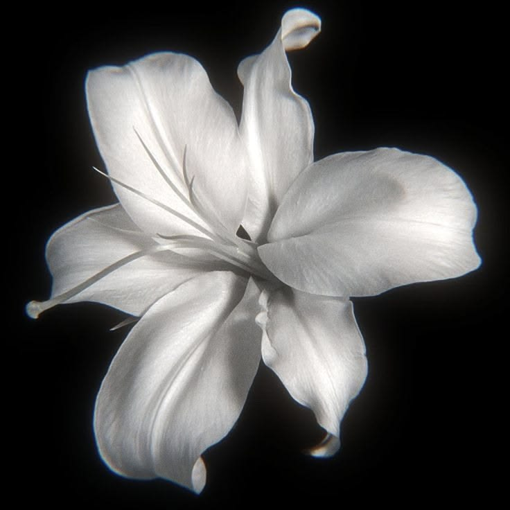

Tương lai của
Hệ thống giao dịch tự động phái sinh OKX thế hệ mới. Phân tích đồng thuận đa khung thời gian 15p → 4h, lọc tín hiệu theo Win Rate, Profit Factor và Total PnL — thông minh hơn, chính xác hơn.

Phân tích đồng thuận tín hiệu từ khung 15p đến 4h. Chỉ vào lệnh khi ít nhất 2 khung xác nhận cùng chiều.
Bot quét liên tục, gửi tín hiệu qua webhook, hiển thị trực tiếp trên Dashboard. Không cần can thiệp thủ công.
Lọc nghiêm ngặt theo Win Rate, Profit Factor và PnL. Chỉ hiển thị kèo đạt ngưỡng bạn thiết lập.